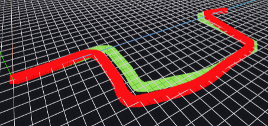

Representación de la pose estimada
Tras disponer de un visor 3D capaz de representar la trayectoria real del vehículo (Ground Truth), el siguiente paso consistió en proporcionar un mecanismo para que el usuario pudiera visualizar los resultados generados por su propio algoritmo de odometría visual.
Para ello se incorporó una nueva función dentro de la infraestructura del ejercicio que permite enviar la pose estimada en cada instante de la ejecución. A partir de esta información, el visor actualiza automáticamente la escena 3D mostrando la evolución de la trayectoria estimada.
Envío de la pose estimada
La interfaz expuesta al usuario es muy sencilla. Una vez que el algoritmo calcula la posición estimada del vehículo, basta con invocar la función proporcionada por la infraestructura para enviar el nuevo punto al visor.
def showEstimatedPoint(self, point):
if point is None:
return
self.payload["estimated_point"] = [
float(point[0]),
float(point[1]),
float(point[2])
]
Esta función encapsula la comunicación con el WebGUI, de modo que el usuario únicamente debe proporcionar las coordenadas estimadas sin preocuparse de la representación gráfica.
Representación en el visor 3D
Cada nueva posición recibida se transforma al sistema de coordenadas empleado por el visor y se añade automáticamente a la trayectoria estimada, representándola mediante una línea roja en la escena 3D.
if (update.estimated_point?.length === 3) {
const raw = update.estimated_point;
const scaled = [
-raw[0] * GT_SCALE,
raw[1] * GT_SCALE,
raw[2] * GT_SCALE
];
setEstTrajectory((prev) => [
...prev,
[scaled[0], scaled[1], scaled[2], 255, 0, 0],
]);
}
En cada actualización se añade un nuevo punto a la trayectoria estimada, que se dibuja en color rojo para diferenciarla visualmente de la trayectoria Ground Truth. Gracias a esta actualización incremental, el recorrido va construyéndose en tiempo real conforme el algoritmo procesa la secuencia.
Visualización durante la ejecución
Gracias a esta funcionalidad, el visor deja de ser únicamente una herramienta para visualizar la trayectoria real y pasa a convertirse en un entorno donde es posible observar en tiempo real el comportamiento del algoritmo desarrollado por el usuario.

A medida que se procesan los fotogramas de la secuencia, cada nueva pose estimada se incorpora a la escena, construyendo progresivamente una línea roja que representa el recorrido calculado por el algoritmo. Esto facilita la comparación visual con la trayectoria Ground Truth y permite detectar de forma intuitiva posibles desviaciones o errores acumulados.
Conclusión
La incorporación de esta nueva funcionalidad supone un paso importante en el desarrollo del ejercicio, ya que permite integrar directamente los resultados obtenidos por el algoritmo del usuario dentro del visor 3D.